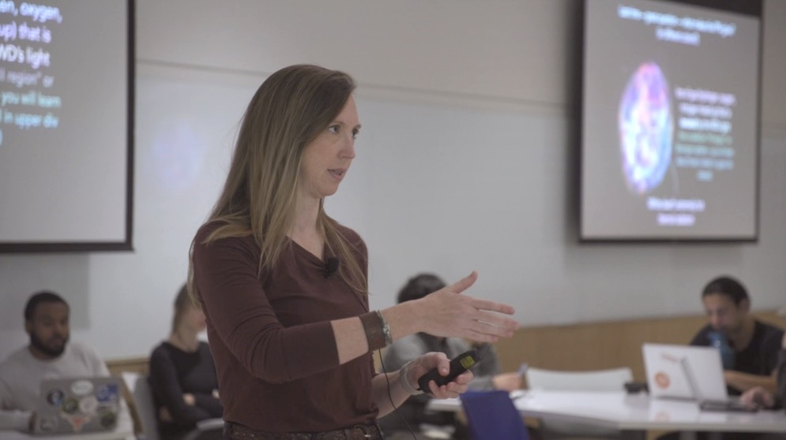

Science by Doing
Caitlin Casey's Teaching Page

Philosophy on Learning
Fostering scientific literacy is my top priority, whether it be in informal everyday interactions, in front of a classroom, advising students, or reaching out to the community. Scientific literacy is a challenging task to master in an era when rote memorization is praised and limitless information is ready at the swipe of a finger. My philosophy on teaching and learning is based on understanding what learners bring to the classroom, deconstructing misconceptions and slowly building understanding up from a solid base of understanding. I also strive to teach and advise equitably and inclusively, mindful of historical social norms that have marginalized certain voices in our classrooms, in our research spaces, and in our celebrated discoveries. Serving all learners requires we prioritize safe, accessible learning environments.
F.A.Q.
Q: What courses are you teaching this year?A: Check the UCSB Course Schedule for more information.
Q: I'm a UCSB undergrad or physics-focused grad student. May I take your grad class next quarter? A: Every class I teach is designed around its learners. My graduate level courses at UCSB are designed for PhD students with the astrophysics emphasis, equivalent to astronomy graduate students with substantial astronomy background. At the very least I assume learners come in with at least one (if not several) undergraduate astronomy courses for preparation; students without this background will struggle, but if you are passionate about trying I will not stop you.
Q: What materials do you use for introductory astronomy courses? A: I use Pearson products including Mastering Astronomy online homework and the Cosmic Perspectives textbook (any edition is fine).
Q: I'm a UCSB undergrad interested in pursuing research with you. Do you have openings in your group? A: See my research page for more details.